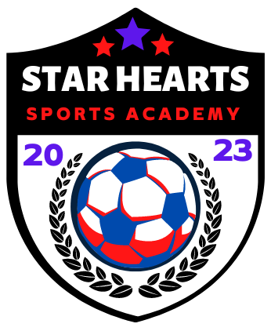

Off the streets.Onto the pitch.Back to school.
Star Hearts Foundation finds talented children who have nowhere to go and gives them football, a school place, a roof over their heads and a family that loves them.
Every child who comes to us has a gift. Too many arrive without a home, a meal or a school to go back to. We make sure talent is never wasted for want of a roof, a uniform or school fees.
From the street to a family, in five steps
Football is how we reach children. What happens next is what changes their lives.
Off the streets
We meet talented children where they are, including children with no home, and invite them to come and play.
Onto the pitch
Football gives them a reason to come back every day, with coaches who notice them and believe in them.
Their talent grows
At Star Hearts Sports Academy they train, compete in tournaments and earn their place in a team.
Back to school
We find scholarships and bursaries so they can return to the classroom and stay there.
A home and a family
Children without a home live at the Star Hearts home, with food, clothes and people who love them.

What every child receives
Talent needs more than a pitch. It needs the basics of a safe childhood.
- A roofA bed at the Star Hearts home for children who have nowhere else to stay.
- Daily mealsFood given by volunteers and friends of the foundation.
- ClothesClothing donated by volunteers, so every child is dressed with dignity.
- SchoolScholarships and bursaries that put children back in primary and secondary school.
- FootballCoaching, matches and tournaments with Star Hearts Sports Academy.
- A familyMentors who teach discipline, respect and responsibility, and who love them.
Rooted in a football academy that already changes lives
The foundation grew out of Star Hearts Sports Academy in Kitende, which began in 2012 with three children. It exists to go further for the talented children who need the most.
Moments from the pitch


“Our mission is to empower young athletes within our community by delivering comprehensive sports training, coupled with the development of essential life skills.”
Mulumba IsmailDirector and Founder, Star Hearts Sports Academy
150,000 UGX gives a child a month of training, boots and care
Sponsor one child or several, and receive regular updates on how they are growing, on the pitch and in the classroom.